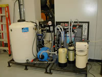
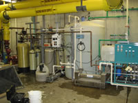
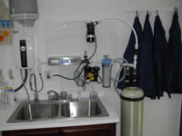
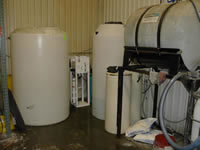
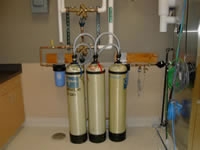
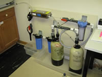

Culligan of Danville furnishes water softeners, reverse osmosis systems, automatic filters, ultraviolet disinfection units, spare parts, equipment repair service and portable deionization service. Organizations served include hospitals, nursing homes, laboratories, restaurants, motels, car washes, colleges and universities, banks, utilities, resorts, laundries and commercial farms.
Custom water treatment systems can include pre-filters, reverse osmosis modules, portable deionization (DI) tanks, 0.2μ post filters, ultraviolet TOC or microbiological destruction systems and activated carbon organic removal systems.
Almost all High Purity water systems for Industry, Health Care and Laboratories must be custom designed to meet the needs of the final process with respect to specifications (purity, microbiological properties, etc.), instantaneous volume and daily/monthly volume required. The processes contain all or some of the following elements.
(1) |
(2) |
(3) |
(4) |
(5) |
(6) |
(7) |
(8) |
(9) |
|
City Water |
Particulate Pre-Filter |
Water Sofener |
Dechlorination Filter |
Reverse Osmosis System |
Storage Tank |
Repressurization Pump |
Polishing De-ionization Tanks |
Ultraviolet Sterilization |
sub-micron Filter |
(1) |
(2) |
(3) |
(4) |
|
City Water |
Particulate Pre-Filter |
Water Sofener |
Dechlorination Filter |
Reverse Osmosis System |
(5) |
(6) |
(7) |
(8) |
(9) |
Storage Tank |
Repressurization Pump |
Polishing De-ionization Tanks |
Ultraviolet Sterilization |
sub-micron Filter |
| Common applications are: | |
|
|
These custom processes can be all incorporated into a single module or can consist of a number of the individual elements listed above. Below are photographs of several existing systems in Central Kentucky.
 High Purity Water System for Photographic Imaging10285 |
 Integrated High Purity Water System for University Laboratory10302 |
 High Purity System for Remote Laboratory10295 |
|||
 High Purity Water System for Cleaning10315 |
 Portable DI System for Parts Washing10296
|
 Small Water Supply System for Laboratory10321 |